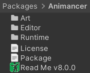

This page was last updated 2024-07-01
What's happening?
- Animancer v8.0 will be released as a separate asset from the old version.
- The regular price will remain at $90 USD.
- Users who purchase the current version after this message is posted (2024-05-01) can upgrade for free once the new version is released.
- Other users who purchased before that will receive a 50% discount to upgrade.
- After the Full Release, the old version will be deprecated so new users can no longer purchase it but existing users can still download it.
- Future updates will be free unless another major version has significant features which I may decide to charge for again.
What if some users want to stay on the old version?
- Animancer v7.4 has been stable for over a year now so it will remain usable in Unity 2019 to 2023.
- It may work in newer versions, but will not be updated if there are issues.
- It has many known bugs (i.e. the Animancer v8.0 Fixes list) but will not receive any more updates.
- Support will be limited:
- Questions about how to do do things in the old version will still be answered, though the answer may include upgrading if newer versions have features that would help.
- Bug reports and anything complex enough to require sending me a project to look at will generally be rejected without investigation.
Why charge for this update as a separate asset?
There's really two questions in that:
Why release this update as a separate asset?
Unity doesn't have a way for me to warn users about breaking changes before they update so forcing everyone to manually get a new asset is the only viable way to avoid the hassle and negative reviews I've received in the past.
The main breaking changes include:
- The minimum supported Unity version is now 2022.3.
- Your Assembly Definitions will lose their references to Animancer unless you had "Use GUIDs" enabled.
- Animancer Events have been reworked to no longer get automatically cleared whenever you play something, you're expected to configure the necessary events when a state is first played. This is a significant change which will require everyone using events to rethink their scripts.
- A lot of serialized data has been changed and would be lost without the Serialized Data Migration tool which needs to be run manually and isn't 100% reliable.
- The Custom Fade system has been completely replaced by Fade Groups.
- Many APIs have been renamed.
Why charge existing users for this update?
- This version has more significant new features than any previous one and the necessity to release it as a separate asset makes this an appropriate time to charge as many other assets do for major updates.
- Developing and supporting Animancer costs me a lot of time and energy. I'd love to be able to give it away for free, but I can't justify spending most of my free time on it without earning some income from it.
Release Timeline
It will be released when it's ready, probably late 2024. I'm only giving rough estimates rather than committing to specific dates because I have a full time job and it's hard to predict how much time and motivation I'll have left for developing Animancer.
This page was last updated 2024-07-01
Alpha
- Its current state is feature-complete, except for the outdated examples and documentation.
- During this period, my primary development focus will be on improving the examples and adding new ones for the new features.
- That will probably take 1 or 2 months, including updating the documentation of the examples (but not the rest of the documentation).
Beta
- This will be the new release on the Unity Asset Store as "Animancer Pro v8.0 [Beta]".
- The old version will be renamed to "Animancer Pro v7.4 [Legacy]".
- Same for Lite.
- During this period, my primary development focus will be on improving the rest of the documentation and covering the new features.
- I could spend practically forever improving the documentation but that can also be done after release so I'll probably only spend about a month on it before release.
- I also need to make a new trailer video to include the new features (or pay for an actual professional to make it).
- The current trailer video took me about a month to make so that would also push back the release if I can't find anyone to make it for me.
Release
- Upon release, the old version will be deprecated so new users can't purchase it anymore (but existing users can still download it) and the new version will be renamed to simply Animancer Pro / Lite.
- During this period, my primary development focus will be on finally getting to play Baldur's Gate 3 and Shadow of the Erdtree before I start working on updates for some of my other plugins.
- When I do get back around to Animancer again, the next major feature I want to look at is Inertialization.
How to Upgrade
Alpha testing is now open.
| Animancer | Available to | How to get it |
|---|---|---|
| Lite | Everyone can try it out for FREE. | Download it right here: |
| Pro | Anyone who purchased Animancer Pro after 2024-05-01 will be able to upgrade to Animancer v8.0 for free and is eligible for testing. | Email the Invoice Number from your purchase to animancer@kybernetik.com.au and you will be given access to the Animancer Pro test package. |
Updating a project from an earlier version of Animancer to v8.0 is not recommended if you can avoid it since there are so many large changes, but if you decide to do so then please follow this process closely:
- Backup your project. Using a Version Control system such as Git is strongly recommended in general.
- Update to Unity 2022.3 or later (the minimum required by Animancer v8.0).
- Delete your old version of Animancer (it should be in Assets/Plugins/Animancer unless you moved it).
- Import the new version of Animancer (it will import into Packages/com.kybernetik.animancer).
- Fix all your Assembly Definitions that reference Animancer.
- Fix all your scripts that have compile errors due to Animancer's API changes.
- Run the Serialized Data Migrator.
- Read the Behaviour Changes section and edit your scripts accordingly.
Reading the full Change Log is also a good idea to understand any of the smaller changes that may affect your project.
Package Structure
Animancer has been moved from Assets/Plugins into the Packages folder so that other packages can reference it.
| Old Package Structure | New Package Structure |
|---|---|
|  |
Assembly Definitions
Moving into the Packages folder wouldn't cause any issues on its own, however assemblies in packages are recommended to follow the naming convention CompanyName.ProductName so Animancer's assemblies have been renamed to follow that standard (from Animancer... to Kybernetik.Animancer...).
If you have any Assembly Definitions which reference Animancer but don't have Use GUIDs enabled, they will lose that reference and you will need to re-assign it. Enabling Use GUIDs is generally recommended to avoid this issue in the future.
| Old Assembly Reference | New Assembly Reference |
|---|---|
Note that some Editor-Only scripts have been split into Kybernetik.Animancer.Editor so you may need to reference it as well as (or instead of) the runtime Kybernetik.Animancer assembly.
API Changes
After fixing the references in all your Assembly Definitions, you might get compile errors due to changes in Animancer's APIs. This section explains those changes and how to fix them.
Renaming
Some changes involve simply renaming things:
| Old Name | New Name |
|---|---|
| Types | |
AnimancerPlayable |
AnimancerGraph |
AnimancerPlayable.LayerList |
AnimancerLayerList |
AnimancerPlayable.StateDictionary |
AnimancerStateDictionary |
IPlayableWrapper |
AnimancerNodeBase |
AnimancerTransition |
Transition |
AnimancerTransitionAssetBase |
TransitionAssetBase |
AnimancerTransitionAsset |
TransitionAsset |
ClipTransitionAsset |
TransitionAsset |
ControllerTransitionAsset |
TransitionAsset |
Float1ControllerTransitionAsset |
TransitionAsset |
Float2ControllerTransitionAsset |
TransitionAsset |
Float3ControllerTransitionAsset |
TransitionAsset |
LinearMixerTransitionAsset |
TransitionAsset |
ManualMixerTransitionAsset |
TransitionAsset |
MixerTransition2DAsset |
TransitionAsset |
PlayableAssetTransitionAsset |
TransitionAsset |
| Members | |
AnimancerComponent.Playable |
AnimancerComponent.Graph |
AnimancerNodeBase.Root |
AnimancerNodeBase.Graph |
AnimancerPlayable.KeepChildrenConnected |
AnimancerGraph.SetKeepChildrenConnected(bool) |
AnimancerPlayable.PreUpdatableCount |
AnimancerGraph.PreUpdatables.Count |
AnimancerPlayable.PostUpdatableCount |
AnimancerGraph.PostUpdatables.Count |
AnimancerPlayable.DestroyGraph() |
AnimancerGraph.Destroy() |
AnimancerState.SetRoot(AnimancerPlayable) |
AnimancerState.SetGraph(AnimancerGraph) |
Transition Assets
The classes inheriting from AnimancerTransitionAsset for each specific transition type have been removed because AnimancerTransitionAsset has a [SerializeReference] field which lets you pick any type of transition anyway so those classes were mostly superfluous clutter.
- As shown in the above table, any transition asset fields you had can be changed to
AnimancerTransitionAsset.- The Serialized Data Migration tool will handle changing the type of all your transition assets.
- This also means you might need to refactor any places where you were using members from the removed types:
UnShared Transitions
The UnShared transition classes have been entirely removed since the new Shared Events system is much easier to understand and works in a wider variety of situations.
Any TransitionAssetType.UnShared field you had can simply be changed into a direct reference to an AnimancerTransitionAsset.
- Any interactions with the
Eventsproperty of that field will need to be moved to the state after it's played as explained in the Shared Events section. - The Serialized Data Migration tool will try to fix the serialized data for former
UnSharedfields so they don't lose any asset references you have already assigned.
Fade Groups
The old CustomFade system has been replaced by a new FadeGroup system explained on the main Change Log page.
Graph Structure
The IPlayableWrapper interface has been reworked into the AnimancerNodeBase class.
AnimancerGraphandAnimancerNodeinherit fromAnimancerNodeBase.AnimancerStateandAnimancerLayerinherit fromAnimancerNode.- Removed
AnimancerNode.IsValid. UseAnimancerNode.Playable.IsValid()instead. - Changed
AnimancerGraph.IsValidintoIsValidOrDispose.
Object Pools
ObjectPoolandObjectPool<T>used to bestaticclasses with basic functionality that only worked with parameterless constructors.ObjectPoolhas been removed.ObjectPool<T>has been changed to a regular instance class which can be inherited to allow each type to clear or reset its objects appropriately when releaseing them to the pool and to assert that pooled objects have appropriate default values when acquiring them from the pool.- If an inherited pool class exists for a given type, you won't be able to use the base
ObjectPoolclass for that type because doing so would skip the proper acquisition and release constraints applied by the inherited class.
- If an inherited pool class exists for a given type, you won't be able to use the base
- Added standard pool types:
ListPool,SetPool,GUIContentPool, andStringBuilderPool.- For example, instead of the old
ObjectPool.AcquireList<string>()you would now useListPool<string>.Instance.Acquire(). - This change requires a bit more code, but is safer because it's no longer possible to call
ObjectPool<List<string>>.Release(list)which would not have automatically cleared the list likeObjectPool.Release(list).
- For example, instead of the old
- Animancer classes that use pooling have their own nested
Pooltypes inside them:AnimancerEvent.Sequence,AnimancerEvent.Dispatcher,FadeGroup, andCloneContext.
Indexed Lists
There are several systems in Animancer with lists that need to be able to add and remove items at any time and want to do so quickly without needing to search through the whole list to find an item to remove.
- The old solution was
Key.KeyedList. - That system has been changed into
IndexedList. - The new system is more memory efficient, faster, and more flexible, but a bit less safe if used incorrectly.
- It's unlikely that any users are directly using this system in their scripts, but feel free to ask for help if you can't figure out how to use the new system based on its API and comments.
Serialized Data Migration
The Read Me asset located in the root Animancer folder has a button to migrate old serialized data to the format required by Animancer v8.0:
It shows a warning to confirm that you have backed up your project:
This process fixes the serialized data in scenes, prefabs, and scriptable objects which would have been invalidated by the following changes:
- The Assembly Name Change would cause the values of all
[SerializeReference]fields referencing Animancer types to be lost because those references are based on the assembly name.- All Transition Assets would lose their values because they use
[SerializeReference]fields. - All
[SerializeReference]fields containing transitions in your scripts would also be lost. - Regular
[SerializeField]values would be unaffected. They don't support polymorphism so the type can be inferred from the field instead of needing to include it in the serialized data.
- All Transition Assets would lose their values because they use
- The new Event Name system would cause all event names to be lost because the field no longer holds strings.
- The new Event Callback system would cause all event callbacks to be lost because the field is now a
[SerializeReference]instead of always aUnityEvent.
Behaviour Changes
This version contains some significant changes to the way Animancer works which you will need to deal with on a case by case basis:
- The Animancer Events system has been changed to avoid issues with shared events and to not automatically clear events whenever something is played.
- This will likely require you to rework most scripts that interact with Animancer Events.
- The internal system which invokes Animancer Events has been changed.
- This likely won't affect most users.
- The old system invoked events during the internal Animation Update.
- The new system invokes events during
LateUpdatewith a[DefaultExecutionOrder]of-30000(minimum is-32000). - In
Animate Physicsmode, events will be invoked in a coroutine usingWaitForFixedUpdateinstead ofLateUpdate. - This is mostly an internal change which greatly simplifies several things that were more complicated than necessary in order to delay operations that aren't allowed at that point in the Animation Update.